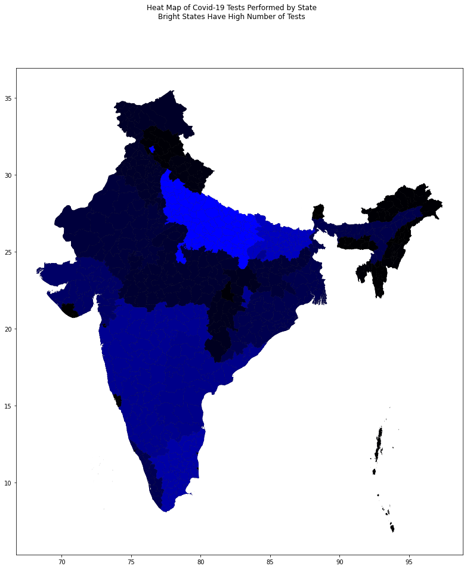
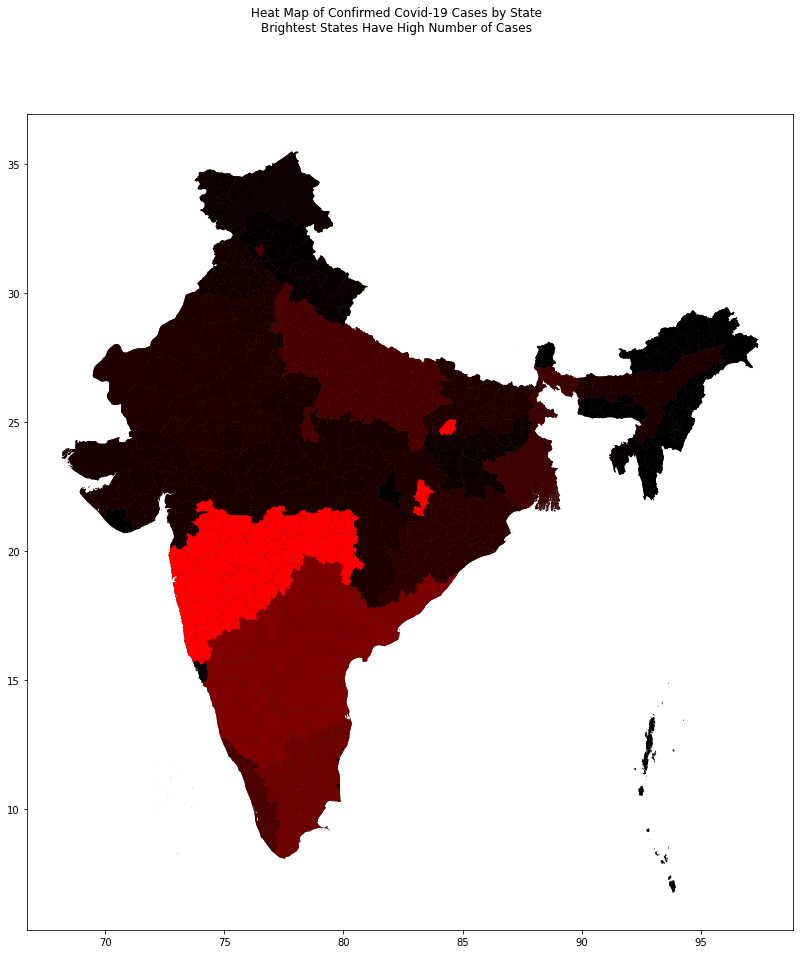

from shapely.geometry import Polygon
import matplotlib.pyplot as plt
import os
import csv
import pandas as pd
import geopandas as gpd
import fiona
---------------------------------------------------------------------------
ModuleNotFoundError Traceback (most recent call last)
<ipython-input-1-c0713c019e5b> in <module>
----> 1 from shapely.geometry import Polygon
2 import matplotlib.pyplot as plt
3 import os
4 import csv
5 import pandas as pd
ModuleNotFoundError: No module named 'shapely'
def shp_lookup(shp_dir, search_prop, query):
"""
function that returns name of shapefile (.shp) associated with a particualar field
If looking for shp by city, use
Args:
shp_dir : str
location of shapefiles to be searched
search_prop : str
field to search for in shapefiles
(city: 'NAME_2')
(region/state: 'NAME_1')
query : str
string to be searched for i.e. 'Delhi'
Returns:
str[] : array of filenames of shapefiles
"""
fnames = []
for filename in os.listdir(shp_dir):
if filename.endswith(".shp"):
with fiona.open(shp_dir + filename) as src:
if src[0]['properties'][search_prop] == query:
fnames.append(filename)
if len(fnames) == 0:
return "No shapefile exists"
return fnames
def filter_dataframe(dataframe, search_col, query):
"""
Filters a pandas dataframe and returns a new dataframe based
on a query.
Args:
dataframe : pandas dataframe
Unfiltered pandas dataframe.
search_col : str
Column field we are filtering by.
ex. 'State/UnionTerritory' for covid_19_india.csv
query : str
value to be searched for i.e. 'Tripura.'
Returns:
dataframe : New dataframe filtered by the column field
and query.
"""
conditional = dataframe[search_col] == query
filtered = dataframe[conditional]
return filtered
# Instantiate a dataframe with the covid dataset and one with the testing dataset
covid_df = pd.read_csv("covid_19_india.csv")
test_df = pd.read_csv("StatewiseTestingDetails.csv")
# Read Shapefile
india_shp = gpd.read_file("shapefiles/India_Districts_ADM2_GADM.shp")
# filter the dataframe to the most recent figures
covid_ft = filter_dataframe(covid_df, "Date", "16/11/20")
covid_regions = [] # stores region names
covid_cases = [] # stores confirmed cases
max_cases = 0 # holds the max number of cases for the heat map
# iterates through all states and updates covid_regions and covid_cases and max_cases appropriately
for i in range((int) (covid_ft.size/9)):
covid_regions.append(covid_ft.iloc[i]["State/UnionTerritory"])
covid_cases.append(covid_ft.iloc[i]["Confirmed"])
if covid_cases[i] > max_cases:
max_cases = covid_cases[i]
# filter the dataframe to the most recent figures
test_ft = filter_dataframe(test_df, "Date", "2020-11-15")
test_regions = [] # stores region names
test_tests = [] # stores number of tests performed
max_tests = 0 # holds the max number of tests for the heat map
# iterates through all states and updates test_regions and test_tests
for i in range((int) (test_ft.size/5)):
test_regions.append(test_ft.iloc[i]["State"])
test_tests.append(test_ft.iloc[i]["TotalSamples"])
if test_tests[i] > max_tests:
max_tests = test_tests[i]
# getting those annoying edge cases not caught in the final day of testing
test_regions.append("Dadra and Nagar Haveli and Daman and Diu")
test_tests.append(filter_dataframe(filter_dataframe(test_df, "State", "Dadra and Nagar Haveli and Daman and Diu"), "Date", "2020-10-20").iloc[0]["TotalSamples"])
test_regions.append("Maharashtra")
test_tests.append(filter_dataframe(filter_dataframe(test_df, "State", "Maharashtra"), "Date", "2020-11-13").iloc[0]["TotalSamples"])
test_regions.append("Manipur")
test_tests.append(filter_dataframe(filter_dataframe(test_df, "State", "Manipur"), "Date", "2020-11-14").iloc[0]["TotalSamples"])
test_regions.append("Meghalaya")
test_tests.append(filter_dataframe(filter_dataframe(test_df, "State", "Meghalaya"), "Date", "2020-11-14").iloc[0]["TotalSamples"])
# finds the max_tests value for the heat map
for i in range(len(test_regions)):
if test_tests[i] > max_tests:
max_tests = test_tests[i]
# display shapefile
fig, ax = plt.subplots(figsize=(15,15))
fig.suptitle("Heat Map of Covid-19 Tests Performed by State\nBright States Have High Number of Tests")
india_shp.plot(ax = ax, color=(0,0,0))
# iterates over all regions
for i in range(len(test_regions)):
# checks if shapefile uses an outdated name for a region/state and gets the correct districts
if test_regions[i] == "Andaman and Nicobar Islands":
fnames = shp_lookup(r'shapefiles/regions/', 'NAME_1', "Andaman and Nicobar")
elif test_regions[i] == "Odisha":
fnames = shp_lookup(r'shapefiles/regions/', 'NAME_1', "Orissa")
elif test_regions[i] == "Uttarakhand":
fnames = shp_lookup(r'shapefiles/regions/', 'NAME_1', "Uttaranchal")
elif test_regions[i] == "Dadra and Nagar Haveli and Daman and Diu":
fnames = shp_lookup(r'shapefiles/regions/', 'NAME_1', "Dadra and Nagar Haveli") + shp_lookup(r'shapefiles/regions/', 'NAME_1', "Daman and Diu")
else:
fnames = shp_lookup(r'shapefiles/regions/', 'NAME_1', test_regions[i])
if fnames != "No shapefile exists":
for j in range(len(fnames)):
district_shp = gpd.read_file(r'shapefiles/regions/' + fnames[j]) # reads the shp file
district_shp.plot(ax = ax, color=(0,0,test_tests[i]/max_tests)) # plots the district with a blue hue

# display shapefile
fig, ax = plt.subplots(figsize=(15,15))
fig.suptitle("Heat Map of Confirmed Covid-19 Cases by State\nBrightest States Have High Number of Cases")
india_shp.plot(ax = ax, color=(0,0,0))
# iterates over all regions
for i in range(len(covid_regions)):
# checks if shapefile uses an outdated name for a region/state and gets the correct districts
if covid_regions[i] == "Andaman and Nicobar Islands":
fnames = shp_lookup(r'shapefiles/regions/', 'NAME_1', "Andaman and Nicobar")
elif covid_regions[i] == "Odisha":
fnames = shp_lookup(r'shapefiles/regions/', 'NAME_1', "Orissa")
elif covid_regions[i] == "Uttarakhand":
fnames = shp_lookup(r'shapefiles/regions/', 'NAME_1', "Uttaranchal")
elif covid_regions[i] == "Dadra and Nagar Haveli and Daman and Diu":
fnames = shp_lookup(r'shapefiles/regions/', 'NAME_1', "Dadra and Nagar Haveli") + shp_lookup(r'shapefiles/regions/', 'NAME_1', "Daman and Diu")
else:
fnames = shp_lookup(r'shapefiles/regions/', 'NAME_1', covid_regions[i])
if fnames != "No shapefile exists":
for j in range(len(fnames)):
district_shp = gpd.read_file(r'shapefiles/regions/' + fnames[j]) # reads the shp file
district_shp.plot(ax = ax, color=(covid_cases[i]/max_cases,0,0)) # plots the district with a red hue
